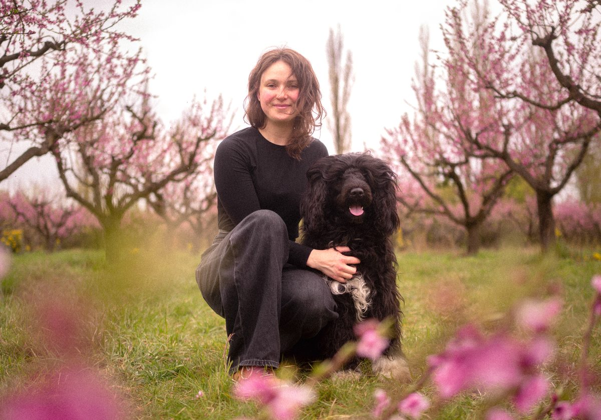
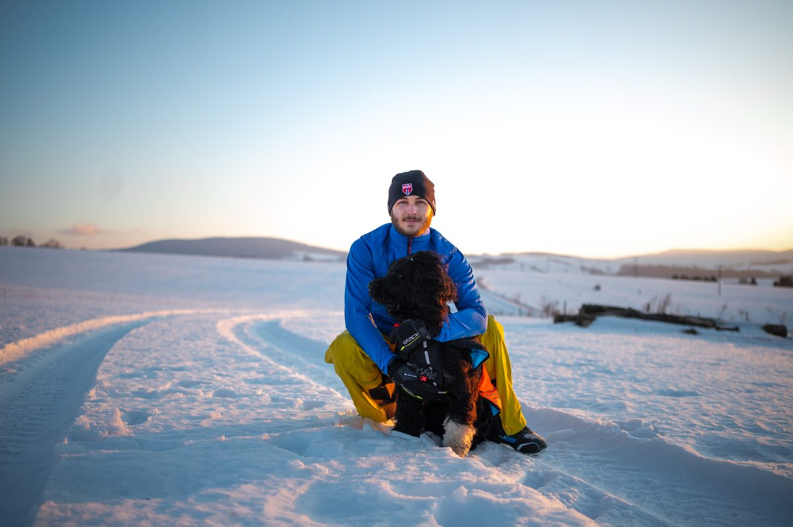

Bezpečí na prvním místě
Každý výlet vede zkušený vodič. Menší smečky do 6 pejsků umožňují individuální dohled.
O nás
Od klasického venčení psů není hlavním produktem hodinová procházka. Je to celý den v přírodě v malé psí smečce, pod dohledem zkušeného vodiče.

Náš příběh
Kolem sebe vidíme spoustu psů, co by nejradši běhali od rána do večera. A ještě víc lidí, kteří to s nimi upřímně myslí dobře – vstávají s nimi za tmy, jezdí na kopec, k vodě, do lesa. Dokud to jde.
Pak ale přijde miminko a den najednou nemá dost hodin. Nebo nával v práci, po kterém se stihne akorát tak padnout do postele. Nebo zdravotní problém, kvůli kterému bolí každý krok. Někdy prostě jen stáří. A pes, co by pořád nejradši vyrazil ven, zůstává čekat u dveří.
Není to špatný majitel – právě naopak. Je to někdo, komu na tom psovi hrozně záleží, jen zrovna nemá tu sílu ani ten čas, který by mu chtěl dát. A vědět, že váš pes potřebuje víc, ale prostě to nejde skloubit se vším ostatním, je fakt nepříjemný pocit. Známe ho i my.
Tak jsme začali vozit brněnské psy na celodenní výlety do přírody. V malých smečkách, max. šest pejsků, pod dohledem člověka, kterého znáte a kterému věříte. S GPS obojkem a fotkami z lesa přes den, ať víte, že je v pohodě a kde zrovna čmuchá. Večer se vrací domů utahaný, spokojený a trochu čistší, než ráno odjížděl (les je zkrátka les).
Proč zrovna takhle? Protože každý z nás má doma svého psa. Víme přesně, jak vypadá ten pohled u dveří, když odcházíte bez něj. A víme, že pes není žádný „zákazník" ani kus srsti navíc, ale někdo, koho máte rádi jako člena rodiny. Takže se o vašeho psa staráme přesně tak, jak bychom chtěli, aby se někdo staral o toho našeho.
Chceme, aby si každý pejsek užil pořádnou péči, bezpečí a hlavně – aby mohl být zase jenom pes. Běhat, čmuchat, blbnout se smečkou. I ve dnech, kdy na to jeho člověk zrovna nemá čas.
Ať má váš pes den, na který se bude těšit.
Co nás vede
Každý výlet vede zkušený vodič. Menší smečky do 6 pejsků umožňují individuální dohled.
Pejsci nejsou na výletě proto, aby je odchodili. Mají prostor běhat, čmuchat, hrát si a být jednoduše psy.
Výlet přizpůsobujeme tomu, co je pro psy přirozené: jejich pohybu a kontaktu s ostatními psy.
Majitel nám svěřuje člena rodiny, proto chce přesně vědět, komu psa svěřuje a jak o něj bude postaráno.
Majitel nemusí řešit, jak psa dostat do lesa ani jak doma uklidit půlku lesa. Pes se vrací příjemně unavený a lehce umytý.
Osobnost značky
Každý telefonát, výlet i zpráva od nás má vyjadřovat těchto pět povahových rysů.
Máme rádi psy a jejich skotačení.
Les > chodník.
Majitel může být v klidu.
Psi nejsou „zákazníci“, ale parťáci.
Žádná sterilní psí korporace.
Kdo vás vodí
Lucie a Lukáš – lidi, se kterými váš pes vyrazí do lesa, a kteří mají doma vlastního psa.
Zakladatelka & vodička
Se svým psem má za sebou nespočet výletů do lesa a přesně ví, jak vypadá pořádně unavený a spokojený pes. Stejnou péči chce dopřát i tomu vašemu.

Zakladatel & vodič
Ať je léto nebo mrazivá zima, se svým psem je venku za každého počasí. Ví, že pořádný pohyb psovi jen tak něco nenahradí.
Půldenní zážitek pro vašeho psa, ve kterém se navzájem poznáme.
Rezervovat